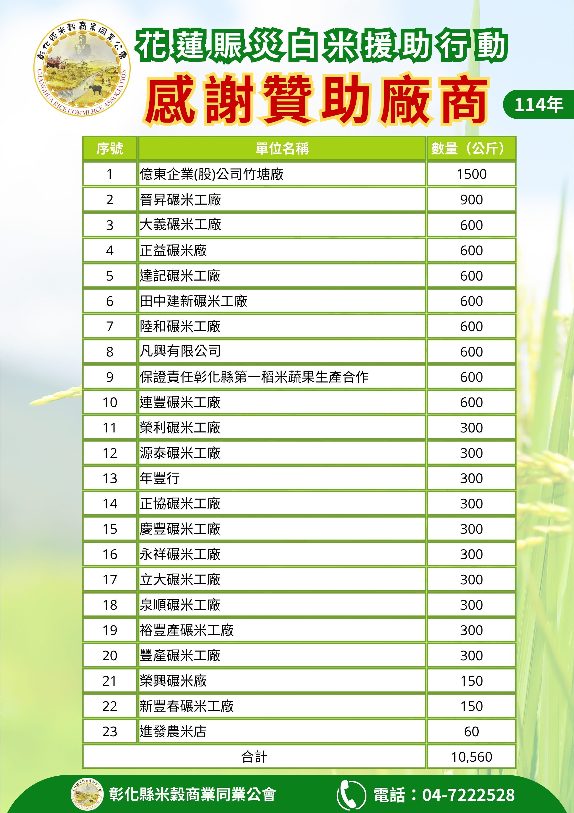

公會簡介
關於公會
依法設立之商業同業公會，協助米穀業者凝聚共識、維護權益、促進交流。
彰化縣米穀商業同業公會成立於中華民國39年12月5日，為依法設立之商業同業公會，以服務轄區內米穀相關業者為宗旨，協調同業關係，促進產業健全發展。
本會持續辦理會員服務、教育訓練、產業交流與公益參與，協助會員掌握相關資訊，提升產業連結與服務品質。
- 公會名稱
- 彰化縣米穀商業同業公會
- 成立日期
- 中華民國39年12月5日
- 統一編號
- 58812408
- 地址
- 500021 彰化市長壽街194號
- 電話
- 04-7222528
- 傳真
- 04-7225229
347會員總數
110甲級會員
237乙級會員
會員服務說明
如需申請入會、查詢會員服務或了解公會相關活動，歡迎洽詢公會辦公室。
歷史沿革
歷屆沿革
自民國39年成立至今，歷屆理事長持續帶領本會穩健發展。
第1屆陳反
民國39–41年
第2屆李俊富
民國41–43年
第3–4屆洪金發
民國43–47年
第5–6屆陳煥章
民國47–51年
第7屆邱思仁
民國51–53年
第8屆洪江林
民國53–55年
第9–10屆許志錕
民國55–59年
第11–12屆陳祥雲
民國59–65年
第13–14屆陳俊雄
民國65–71年
第15–16屆許志錕
民國71–77年
第17–18屆鄭懋樵
民國77–83年
第19–20屆陳德風
民國83–89年
第21–22屆柯騰雄
民國89–95年
第23–24屆巫有凱
民國95–101年
第25–26屆陳樹林
民國101–107年
第27–28屆沈踴志
民國107–113年
第29屆蘇建彰
民國113–116年｜現任理事長
公會公告
最新公告
公告內容以公會正式發布資料為準。
115年度會員教育訓練：農產品業稅務實務與相關法規
花蓮賑災白米援助行動
更多歷史公告內容【待補資料】
會員服務
服務項目
協助會員掌握政策資訊、參與教育訓練、凝聚產業交流與維護同業權益。
申請入會
符合資格之米穀相關業者，歡迎洽詢公會辦公室索取入會相關資料。
公告通知
發布公會公告、政策資訊、會議通知與活動訊息，協助會員掌握重要資訊。
教育訓練
規劃會員教育訓練與人才培育課程，提升產業從業人員專業能力。
協調服務
協調同業關係，反映會員意見，維護產業秩序與會員合法權益。
產業交流
透過會員大會、理監事會議與活動交流，凝聚業界共識與合作機會。
公益參與
結合會員力量參與公益行動，展現公會對地方社會的關懷與責任。
教育訓練
會員教育與人才培訓
本會依訓練品質管理精神，持續規劃會員教育訓練與人才培育課程。
115年度會員教育訓練
農產品業稅務實務與相關法規。課程詳細資料依公會正式公告為準。


活動紀錄
活動與公益參與
記錄本會教育訓練、會員交流與公益參與成果。
公益活動
114年花蓮賑災白米援助行動
本會響應花蓮賑災行動，結合會員力量提供白米援助，展現同業互助與地方關懷。


品牌預留專區
彰榖米品牌推動計畫
以彰化米穀產業為基礎，推動在地米食文化、產業品牌與市場能見度。
「彰榖米」為本會後續推動之品牌發展方向，將結合會員資源、在地米穀產業、教育推廣、食農文化與通路合作，逐步建立彰化米穀產業的品牌識別與推廣平台。
【品牌內容建置中】
未來預留模組
- 品牌理念：【待補資料】
- 彰化米穀特色：【待補資料】
- 米食文化推廣：【待補資料】
- 會員品牌合作：【待補資料】
- 未來通路合作：【待補資料】
組織架構
第29屆理監事名單
名單載入中
請稍候
聯絡資訊
聯絡我們
歡迎來電洽詢或親洽公會辦公室。
彰化縣米穀商業同業公會
- 地址
- 500021 彰化市長壽街194號
- 傳真
- 04-7225229
- riceass01@gmail.com
- 統一編號
- 58812408
- 辦公時間
- 週一至週五 09:00-17:00
申請入會請洽公會辦公室索取相關資料。

加入 LINE 官方帳號
掃描加入彰化縣米穀商業同業公會 LINE 官方帳號，即時接收最新公告與通知。